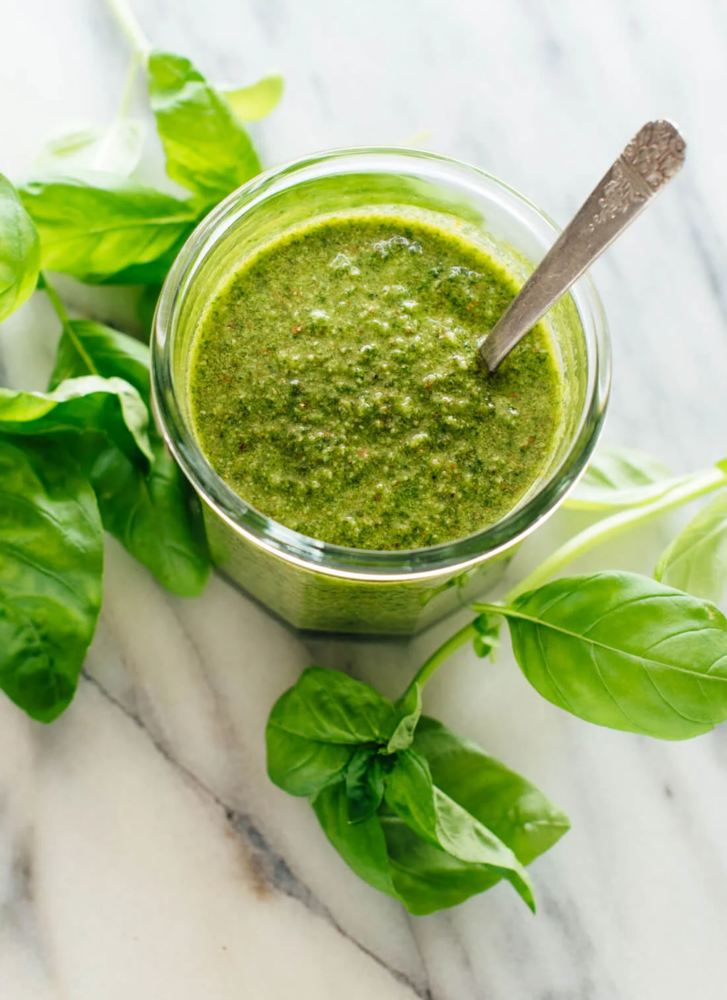

Pesto

Return Home
Description
Pesto is a green italian sauce, its rich, nutty taste makes it a great option to add pastas, salads or sandwiches
Ingredients
- 3 cups packed fresh basil leaves
- ¼ cup pine nuts, almost any kind of nut is fine
- 2 cloves of garlic
- 2 teaspoons lemon juice